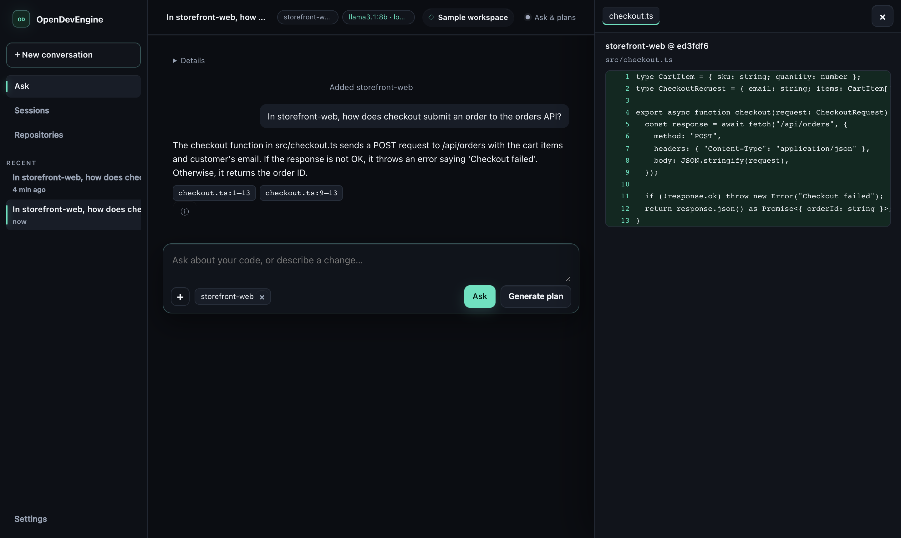

Local-first · Early release 0.1
Understand the code.
Plan the change.
Ask questions across your GitHub repositories, get a source-cited plan, then supervise Claude Code from an isolated repository copy to a draft pull request.
For developers working across their own repositories.
Self-hosted, single user, with models you configure.
From question to review
- 01
Ask
Find the relevant repository and inspect cited source.
- 02
Plan
Edit the scope, changes and checks. Save an immutable version.
- 03
Session
Follow the agent, review diffs and checks, stop when needed.
- 04
Draft PR
Review what will be published. Nothing is merged for you.
Evidence before execution
Start with the source.

Know the boundary
Your computer. Explicit permissions.
Local by default
State stays on your machine. Local-only mode is on by default; remote models need consent to receive source. Credentials live in the OS keychain or vault, with no plaintext fallback.
Brokered execution
Repository files and commands live in a container with --network none, dropped capabilities, a read-only root filesystem and resource limits.
Reviewable publication
Choose which repositories allow changes. Publish a draft PR to a new branch after review. The app never merges or pushes to a default branch.
The agent itself runs on the host. Claude Code uses your login to contact Anthropic. Its built-in tools, hooks, plugins and settings are disabled; it acts through brokered tools into the container. Implementation requires explicit permission to send the plan and permitted source to the external coding model.
The app binds to loopback only and has no login. Use it as a single user on your own computer; do not expose it on a network. Read the full security model →
Run it locally
A workspace on your machine.
Start with Python 3.10+ with SQLite FTS5 and Git. Install optional integrations with the full extra. Sessions additionally need Docker, a locally prepared image and Claude Code installed and logged in.
Open http://127.0.0.1:8765 after starting. Choose a private data directory outside repositories you plan to index; this example uses a directory in the checkout for a first run.
git clone https://github.com/opendevengine/opendevengine.git workspace
cd workspace
python3 -m venv .venv
source .venv/bin/activate
python -m pip install -e '.[full]'
opendevengine --data-dir ./workspace-data
Want to explore first? python3 -m opendevengine runs the bundled in-memory demo without optional packages.
Current scope
Useful now. Still an early release.
Built
- GitHub connection and repository selection
- Indexing, routing and source-cited answers
- Versioned plans and container sessions
- Draft PRs, recovery and session-content deletion
Known limitations
- One user on one computer; loopback only
- Claude Code is the only implementation adapter
- One writable repository per session
- CPU-only local models can take minutes
Planned
M3: User skills, approved plugins/MCP tools and scoped memory. These are not built.
M4: More coding-agent adapters, starting with Codex CLI, and richer cross-repository execution.
Start with one repository and one question.
Connect GitHub, choose what Ask can read, and inspect the evidence before making a change.
Set up your workspace →